从 Self-attention 到 FlashAttention · 11 招全部画给你看 · 10 万浏览长文解读
每张 LLM 模型卡都在宣传自己的 attention 机制: Self-attention、Multi-Head、MQA、GQA、FlashAttention、Sparse、PagedAttention、RadixAttention …… 名词堆了一屏,但背后只有一根主线。Akshay 这篇 10 万浏览长文用 16 张原创插图,按“出现顺序 + 各自修复的瓶颈”把这个谱系一次性捋清楚。
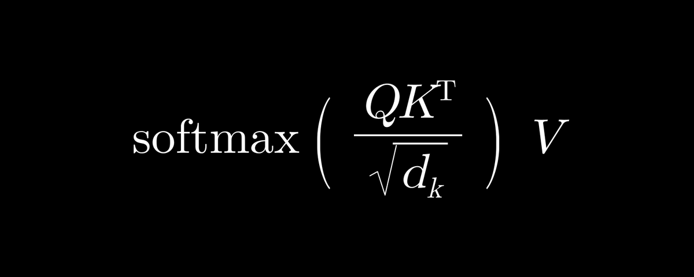
AKSHAY · @AKSHAY_PACHAAR · 2026/09/05 · ATTENTION MECHANISMS IN LLMS, CLEARLY EXPLAINED
作者是谁。Akshay (@akshay_pachaar) · 286K 粉丝 · Daily Dose of DS 联合创始人 · BITS Pilani · 前 LightningAI AI 工程师。X 上长期用插图讲清 LLM / RAG / Agent 内部机制。
这篇文章在讲什么。一句话: 11 种 attention 机制不是 11 个独立概念,是同一个 KV cache memory 瓶颈下的 11 次迭代。文章按“出现顺序 + 修过的具体缺陷”逐个拆解 —— 从最基础的 Self-attention 一直讲到 PagedAttention / RadixAttention 的 serving 层优化。
为什么这篇值得读。市面上的 attention 教程 90% 停在“Scaled Dot-Product Attention”这一步。讲到 MHA 就开始照论文公式抄,讲到 GQA / MLA / FlashAttention 就让你自己看 paper。这篇的好处是:每一种都画一张原创图、用一句人话讲清“修了什么瓶颈 + 牺牲了什么”,让你看完能在白板上给别人复述这条线。
怎么读这篇文章。11 个 capability 章节一一对应原文 H1,每章顶部金句框 + 口语化中文翻译(英文原文保留)。16 张原文插图(封面 + intro 总览图 + 14 张 cap 图)按 `inline-image` 渲染,带 caption 注明原文出处。文末引用区列出原文链接 + 作者其他渠道。
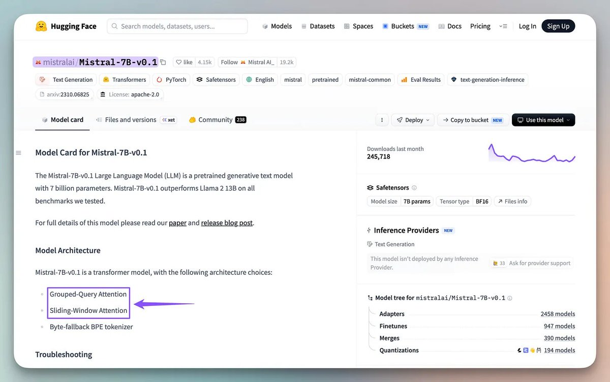
原文配图 · Akshay (@akshay_pachaar) · 2026/09/05 · 9 种 attention 机制一览 —— 本文按出现顺序 + 修过的瓶颈逐一拆解。
这张图是全文路线图。Akshay 用一屏把 9 种 attention 全部摆出来:
1. Self-attention —— 每个 token 看自己序列里所有 token。最基础的操作。
2. Cross-attention —— query 来自一个序列,key/value 来自另一个。encoder-decoder 模型用。
3. Multi-Head Attention (MHA) —— 多个 head 并行,每个 head 独立 KV。表达力最强,显存最贵。
4. Multi-Query Attention (MQA) —— 所有 query head 共享同一份 KV。显存砍 N 倍,质量掉一档。
5. Grouped-Query Attention (GQA) —— 分组共享 KV。MHA 和 MQA 的折中,当前主流开源模型的默认。
6. FlashAttention —— 不改数学,只改“怎么读写显存”。kernel 级优化,所有 serving 引擎标配。
7. Sparse attention —— 不再每两个 token 都算,只算选中的子集。唯一能 scale 到百万 token 的答案。
8. PagedAttention —— vLLM 引擎的机制。把 KV cache 像 OS 虚拟内存一样分页管理。
9. RadixAttention —— SGLang 引擎的机制。用 radix tree 复用多请求共享的前缀 KV。
下面 11 个章节按这张图的顺序,每个讲清楚“修了什么瓶颈 + 牺牲了什么”。
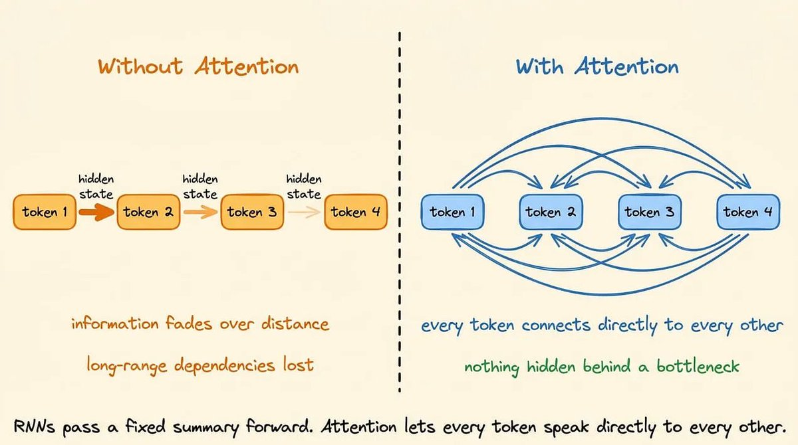
原文配图 · Akshay (@akshay_pachaar) · 2026/09/05 · RNN 固定大小 hidden state vs Attention 每 token 直连所有 token。
早期的序列模型 RNN 把一个固定大小的 hidden state 从一个 token 传到下一个 token。
两个 token 隔得越远,联系越弱。跨长距离的依赖会自然衰减。
Attention 直接解决这个:不再通过瓶颈传状态,每个 token 都能看其他所有 token,自己决定哪些相关。
没有“先压缩再传”的中间步骤。
这种直接性是 transformer 强大的原因 —— 也是它昂贵的同一件事。成本不在数学,在存住“每个 token 看过什么”的内存。
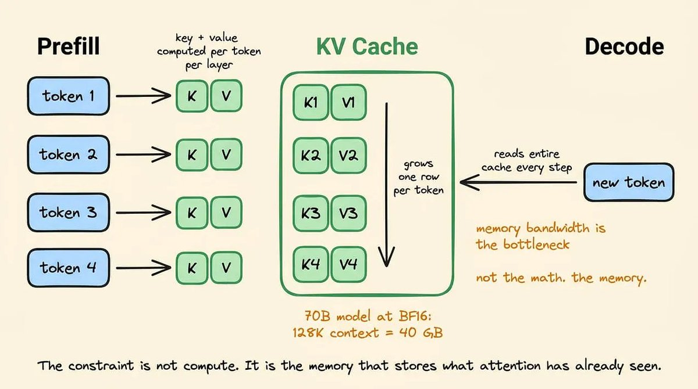
原文配图 · Akshay (@akshay_pachaar) · 2026/09/05 · KV cache 随生成 token 数线性增长;70B BF16 模型 128K context ≈ 40 GB。
模型每次 attend,都要记住之前所有 token 长什么样。
Prefill 阶段,模型一次性处理整个 prompt,为每个 token 在每一层算一个 key 向量和一个 value 向量。
这些东西存在叫 KV cache 的地方,让 decode 阶段能直接 attend,不用从头重算。
Cache 随生成 token 数线性增长。一个 70B BF16 模型,128K context 下 KV cache 大约 40 GB —— 跟 4-bit 量化的模型权重本身一个量级。
瓶颈不是算力,不是 attention 公式里的数学。瓶颈是存住“attention 已经看过什么”的内存。
下面每一种设计都在跟这个瓶颈作战。
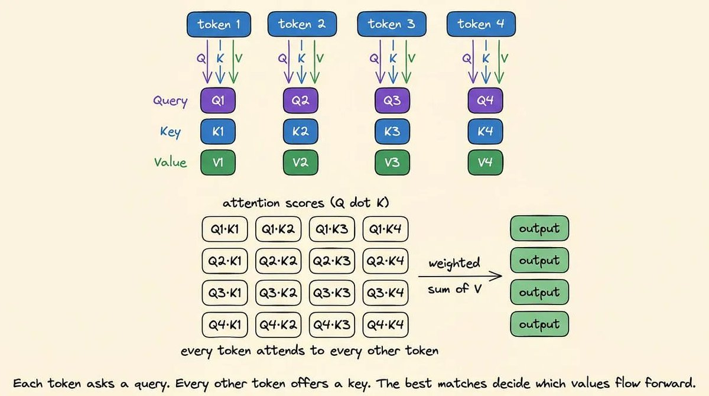
原文配图 · Akshay (@akshay_pachaar) · 2026/09/05 · Self-attention 全连接 vs Causal attention 下三角 mask。
Self-attention 让每个 token attend 序列里所有其他 token。
模型为每个 token 算一个 query、key、value,用 query-key 点积决定这个 token 该给其他每个 token 多少注意力权重。
这是每个 transformer 层里的基本操作。
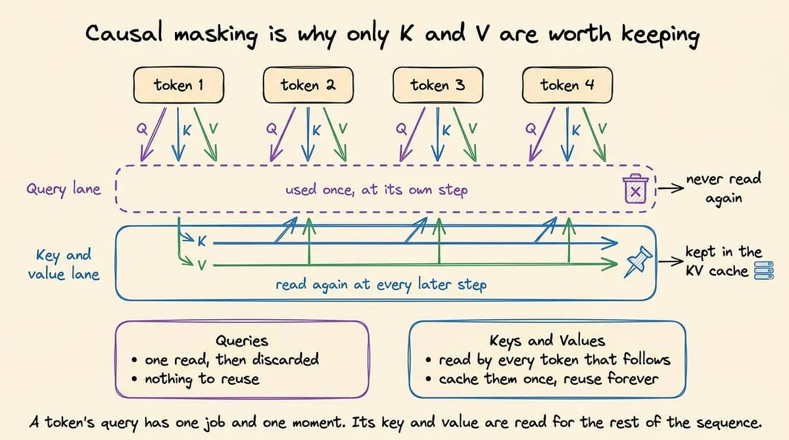
原文配图 · Akshay (@akshay_pachaar) · 2026/09/05 · Causal mask 限制只能看过去;Cross-attention 跨序列取 key/value。
Causal attention = self-attention 套一层下三角 mask。每个 token 只能看之前的 token,不能看未来。
这是 decoder-only 生成可能的原因 —— 没 mask,模型生成答案前就先看到答案了。
Cross-attention 不一样。query 来自一个序列,key 和 value 来自另一个序列。
这是 encoder-decoder 模型(像 T5、Whisper)把 encoder 输出接到 decoder 的方式。Decoder-only 模型(Llama、GPT)里根本没有 cross-attention。
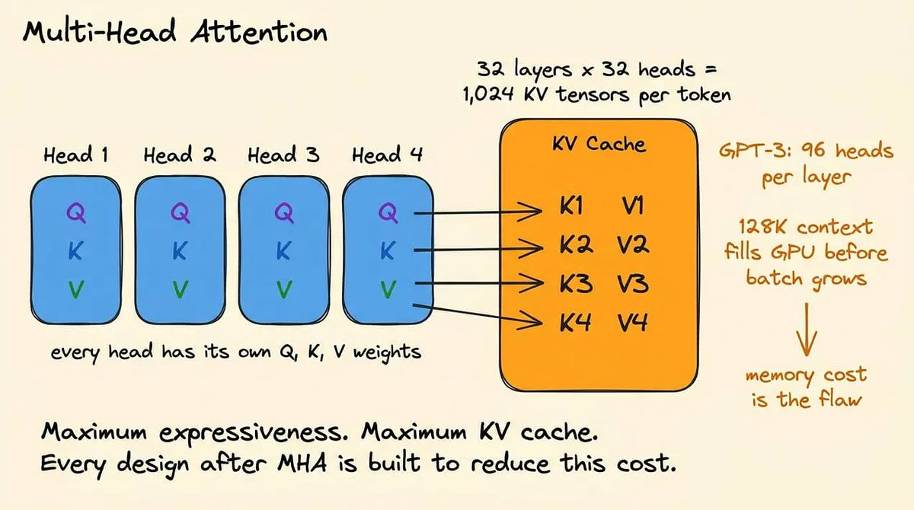
原文配图 · Akshay (@akshay_pachaar) · 2026/09/05 · MHA 每个 head 独立的 Q/K/V 投影;32 heads = 32 套 KV。
Multi-Head Attention (MHA) 是 2017 Transformer 论文里的原始设计。
每个 attention head 拥有自己独立的 query、key、value 权重矩阵。32 个 head 就是 32 套独立的 KV 投影。
好处是表达力。不同 head 同时学不同类型的关系 —— 一个学句法结构,一个学语义接近度,一个学远距离指代。
代价是内存。每个 head 维护自己的 KV cache。32 层 × 32 heads = 每个 token 每请求 1024 个独立 KV tensor。
GPT-3 一层 96 个 heads。128K context 下,光 KV cache 就把 GPU 撑满了,batch 还没起来就结束。
这道内存题就是 MHA 之后所有设计要解决的事。
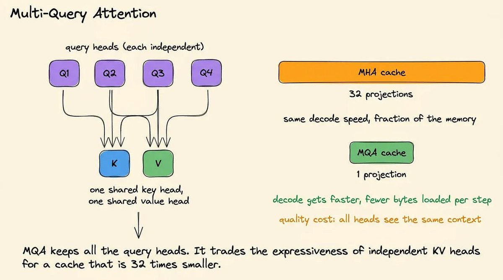
原文配图 · Akshay (@akshay_pachaar) · 2026/09/05 · MQA 所有 query head 共享同一个 key head 和 value head。
Multi-Query Attention (MQA) 走最直接的路线。
所有 query head 仍然有自己独立的权重矩阵 —— 但所有 query head 共享同一个 key head 和同一个 value head。
KV cache 缩小 = head 数倍。MHA 存 32 份 KV 投影,MQA 存1 份。
Decode 更快,因为每步从 HBM 加载的字节数大幅减少 —— 这点很关键,因为 decode 是 memory-bandwidth-bound。
质量代价真实。强制所有 query head 共享一个 key/value,会丢掉 MHA 的一部分表达力。
Falcon、PaLM、早期 Gemini variant 都用过 MQA,接受这个 trade-off 换吞吐量。
MQA 牺牲掉的,下一招基本找回来。
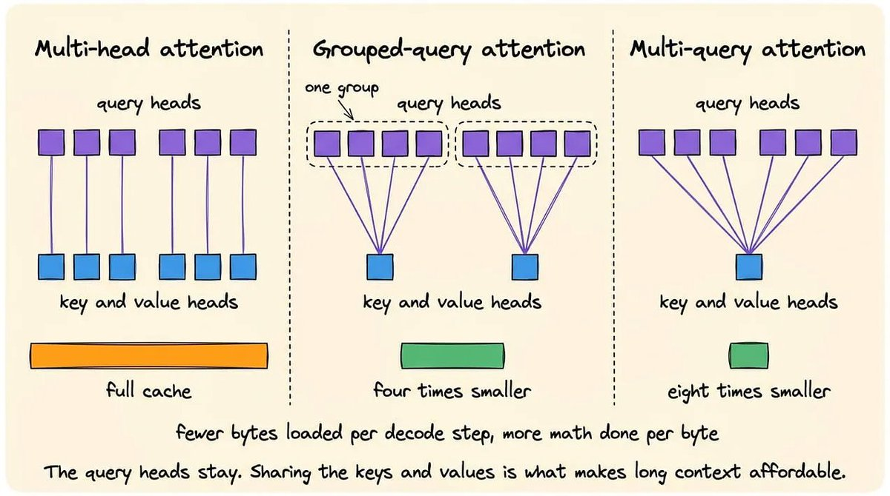
原文配图 · Akshay (@akshay_pachaar) · 2026/09/05 · GQA query heads 分组,每组共享一对 KV head。
Grouped-Query Attention (GQA) 站在 MHA 和 MQA 中间。
Query head 分成若干组,每组共享一个 key head 和一个 value head。组与组之间独立。
32 个 query head + 8 个 KV 组,KV 投影从 32 份变 8 份 —— 比 MHA 节省 4 倍 KV cache,同时拿回 MQA 牺牲掉的大部分质量。
这种平衡让 GQA 成了近几年几乎所有主流开源模型的默认选择。Llama 2 70B 用 8 个 KV 组, Llama 3、Mistral、Mixtral、Gemma、Qwen 全是 GQA。
原始 GQA 论文证明它能在小得多的内存下追平 MHA 质量 —— 这个结论跨模型家族都成立。
GQA 减少了 KV head 数。下一招:压缩 head 本身。
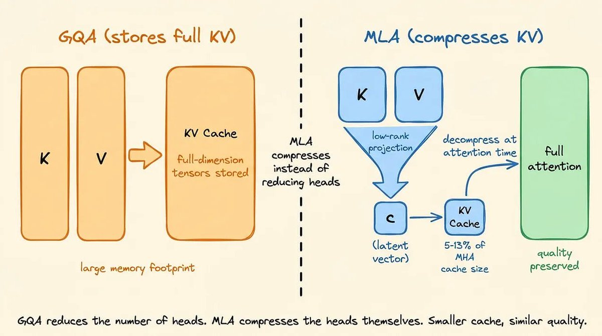
原文配图 · Akshay (@akshay_pachaar) · 2026/09/05 · MLA 把 K/V 先压到低秩 latent 空间再缓存,attention 时再解压。
Multi-Head Latent Attention (MLA) 是 DeepSeek 的贡献,2024 年 5 月 DeepSeek-V2 首发。
MQA/GQA 是减少 KV head 数,MLA 是把全维的 key/value 向量压到低秩 latent 空间再缓存。Attention 时再把这些 latent 向量解压回全维。
缓存的是latent 向量,不是完整 KV tensor。Cache footprint 比 GQA 还小,同时保住 MQA 丢掉的那部分表达力。
Trade-off 在算力。每次 attend 都解压会增加 FLOPs。但推理时内存带宽比算力更常成为瓶颈,所以在大多数真实 serving 配置里,小 cache 战胜额外算力。
DeepSeek-V2、V3、R1 全部用 MLA。DeepSeek-V2 benchmark 上,MLA 在匹配或超过 MHA 质量的同时,KV cache 砍到同等模型大小 MHA 方案的5-13%。
MHA / MQA / GQA / MLA 都是关于“存什么”。
下一招:关于“怎么算得贵”。
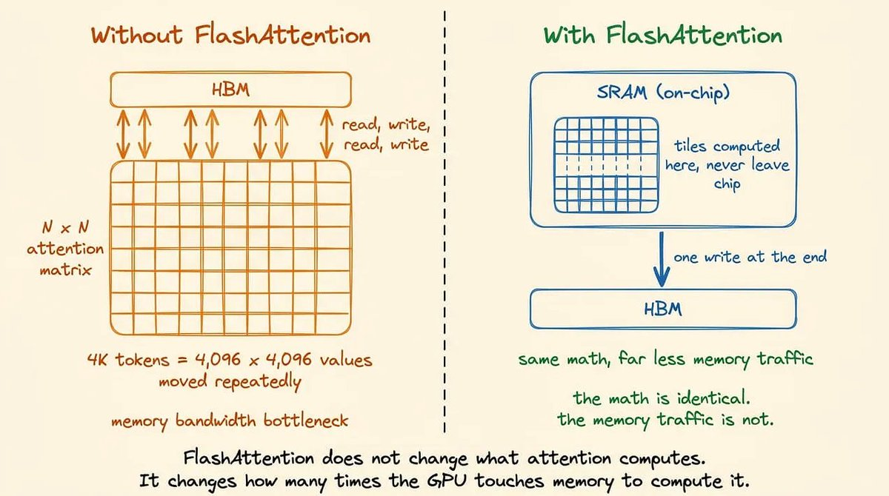
原文配图 · Akshay (@akshay_pachaar) · 2026/09/05 · FlashAttention 把 attention 矩阵切成能放进 SRAM 的块,增量算 softmax。
FlashAttention 不改变 attention 算什么,只改变怎么读写内存。
标准 attention 算出完整的 N×N attention 矩阵,写到 HBM,读回来做 softmax,再写,再读,再做加权求和。
4K token 序列下,这个矩阵是 4096 × 4096 个值。反复在 HBM 来回搬就是 attention 成为长 context 瓶颈的原因。
FlashAttention 分块计算。把 attention 矩阵切成能放进 on-chip SRAM 的小块,在 SRAM 里增量算 softmax,不物化完整矩阵,最后只把输出写一次到 HBM。
数学完全一样。访存模式不一样。
今天每个主要 serving 引擎都默认用 FlashAttention kernel。它不是新 attention —— 它是执行“你模型用的那种 attention”的标准 kernel。
MHA / GQA / MLA 答的是“存什么 + 怎么压缩”,FlashAttention 答的是“怎么算得高效”。
Sparse attention 走另一个角度:不是缓存哪些 token,而是到底 attend 多少 token。
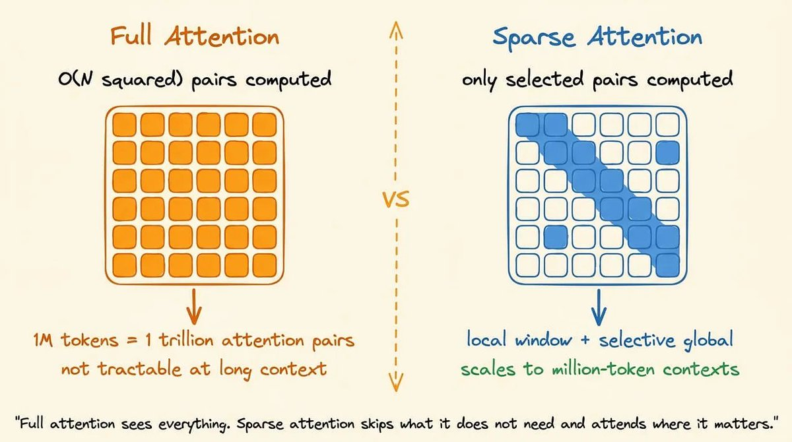
原文配图 · Akshay (@akshay_pachaar) · 2026/09/05 · Sliding Window Attention 每个 token 只看最近 W 个 token。
Full attention 在序列长度上是 O(N²)。1M token context 下 attention 矩阵有 1 万亿个 entry。即使 FlashAttention 减少了访存,这种规模算 attention 也不可承受。
Sparse attention 跳过 attention 矩阵的大部分。不再每两个 token 都算,只算选中的子集。
Sliding Window Attention (SWA) 是最简单的变种。每个 token 只 attend 最近 W 个 token。Local context 保留,远距离 context 丢弃。
Mistral 在某些层用 SWA,跟 full attention 层交错,兼顾 local 精度和部分 global reach。
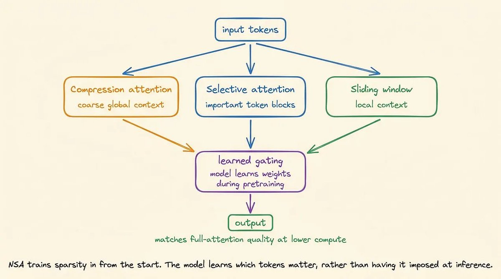
原文配图 · Akshay (@akshay_pachaar) · 2026/09/05 · NSA 三路并行:压缩粗粒度 + 选择细粒度 + sliding window。
Native Sparse Attention (NSA) 是 DeepSeek 2025 年的贡献,跟 MLA 不同。它不是推理时临时套 sparsity,而是训练时就用 sparse attention。
每一层组合三条并行分支:
模型在预训练时学到哪些 token 重要。
NSA 在大多数 benchmark 上匹配 full-attention 质量,同时长序列上跑得明显更快。
Qwen2.5-1M 用 sparse attention 撑百万 token context —— 那个长度 full attention 要吃掉 forward pass 90% 以上的时间。
训练时就引入的 sparsity 正在被证明是长 context scaling 最有原则的答案。
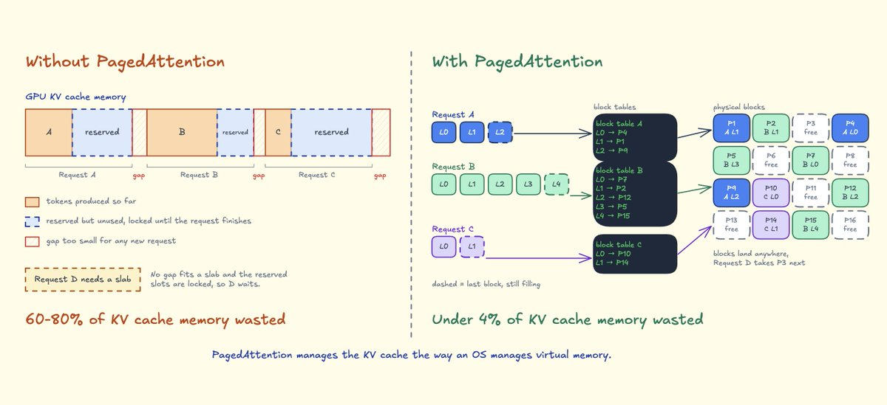
原文配图 · Akshay (@akshay_pachaar) · 2026/09/05 · PagedAttention 按需分配固定大小 block,block table 映射逻辑块到物理块(vLLM)。
上面所有东西都在模型权重里。PagedAttention 和 RadixAttention 在 serving 引擎里,它们在同一份 KV cache 压力下从另一个层面回答。
请求进来时,serving 引擎要给它分配 GPU 内存放 KV cache。天真的做法是按最大序列长度预留连续内存。
允许生成 4096 token 的请求,一上来就预留 4096 个 slot —— 不管实际用 40 还是 4000 个。
这种方式浪费 60-80% GPU 内存。请求之间的碎片化更糟。
PagedAttention(vLLM 的机制)像 OS 管理虚拟内存那样管理 KV cache。按需分配固定大小的块。
一张 block table 把每个请求的逻辑块映射到当时空闲的物理块。没有预分配,没有碎片化,内存浪费降到 4% 以下。
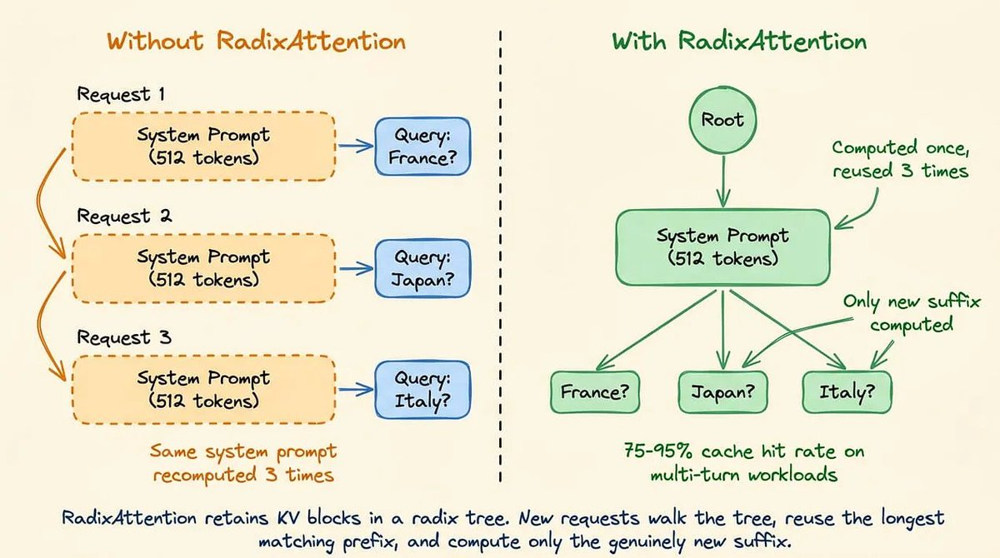
原文配图 · Akshay (@akshay_pachaar) · 2026/09/05 · RadixAttention 用 radix tree 按 token 序列索引 KV blocks(SGLang)。
RadixAttention(SGLang 的机制)走下一步。当多个请求共享一个公共前缀(像发给每个用户的长 system prompt),那份前缀的 KV blocks 只需要算一次。
RadixAttention 把 KV blocks 存在一棵 radix tree 里,按 token 序列做索引。新请求走 tree 找最长匹配前缀,复用那些 blocks,只算真正新增的后缀。
多轮 workload 上,RadixAttention 命中率达 75-95%。一个发给上千用户的 system prompt 只算一次,直到 LRU 淘汰为止。
PagedAttention 和 RadixAttention 不改变你模型用哪种 attention。Llama 3 + GQA 在哪个引擎下都跑得好。两层相互独立。
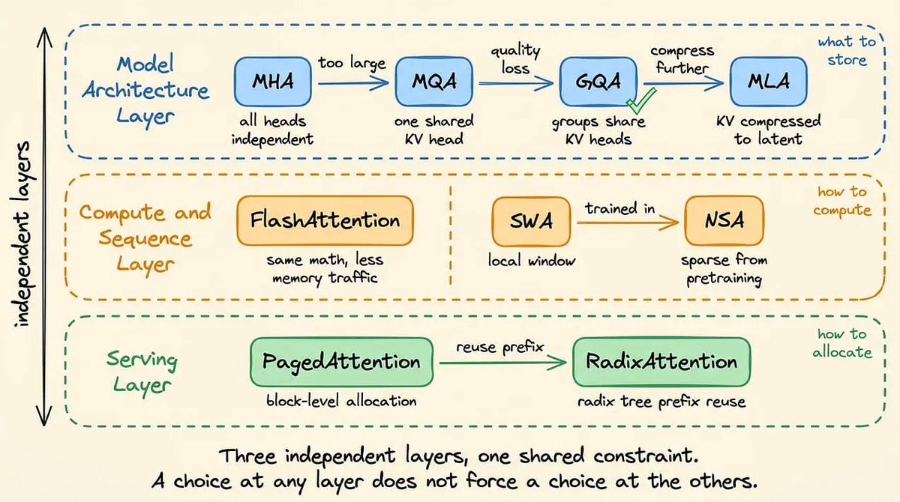
原文配图 · Akshay (@akshay_pachaar) · 2026/09/05 · 同一份 KV cache 压力下的四招:减存储、减访存、减 token、减浪费。
贯穿它们的同一条线是同一份压力。KV cache 内存是瓶颈,每一个设计都是从不同方向进攻这道题。
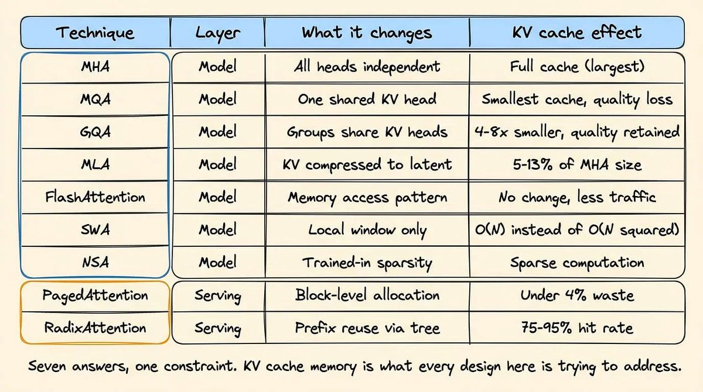
原文配图 · Akshay (@akshay_pachaar) · 2026/09/05 · 决策树:哪个约束是绑定约束,就选哪个优化。
知道你这套部署里哪个是绑定约束,才能判断哪一招真的会让数字动起来。
cache 已经放得下?FlashAttention 的 kernel 优化可能就够了。
质量受限于 KV 头数不够?GQA 加 groups,或换 MLA。
context 长度撑不到你要的?Sparse attention 是唯一解。
多用户共享长 system prompt?换 SGLang,RadixAttention 自动帮你省。
11 种 attention 不是 11 个并列选项,是同一道 KV cache 题的11 个层级回答。
「11 种 attention 不是 11 个并列选项,是同一道 KV cache 题的 11 个层级回答。」
AKSHAY · @AKSHAY_PACHAAR · 2026/09/05
下次再看到模型卡写"GQA-8 heads"、
"MLA compression 5.2"、
"RadixAttention 命中率 87%",
你能直接说出它在跟哪条瓶颈作战。
SOURCES & CREDITS
读这篇的最好方式不是一次性看完,是先看自己模型卡上的 attention 字段名,再到对应章节定位它在 11 招谱系里的位置。